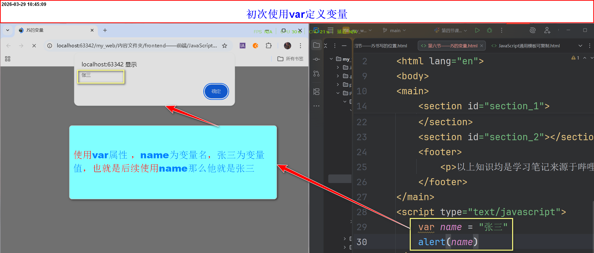

JS的变量
什么是变量
- 变量指的是在程序中保存数据的一个容器
- 变量是计算机内存中存储数据的标识符，根据变量名称可以获取到内存中存储的数据
- 也就是说，向内存存储一个数据，然后给这个数据起一个名字(变量名)，为了方便后续再次调用它
- 语法：
var 变量名 = 值 -
图例

-
注意：
- 一次可以定义多个变量和变量值，但是每个变量之间需要用英文逗号隔开
- 除了var可以定义变量，还有let、const
- 分为两种情况:定义变量不赋值和定义变量赋值
- 不赋值状态：后续可以直接使用变量名(不需要再次声明变量[var、let、const])
- const必须赋值，不然会报错，并且后续不可以重新赋值(值一旦确定，不可改变)——在数组/对象内部数据依然可以改变
- var、let可以不赋值，也可以赋值，后续可以重新赋值
- let、const不允许在同一作用域下，设置同一变量名
- var可以在同一作用域下，设置同一变量名，但是后面的会覆盖前面的变量值所以正常开发不建议使用var定义变量
试验区
-
初次使用var
-
不赋值状态
-
赋值状态
-
作用域
- 变量在代码中能够访问到的"领地"
-
在JavaScript中有三种领地
- 全局作用域：写在所有函数和代码块之外的变量，任何地方都能访问
-
函数作用域：用function包起来的区域，里面的变量只能在这个函数内部使用。
var声明的变量就属于这个领地，函数外拿不到
用 let / const 在函数内声明的变量也一样只能在函数内访问 - 块级作用域(ES6新增):用{}包起来的区域，比如if、for或单独的{}。
let和const声明的变量只在这个{}内有效，外面无法访问
var不支持块级作用域